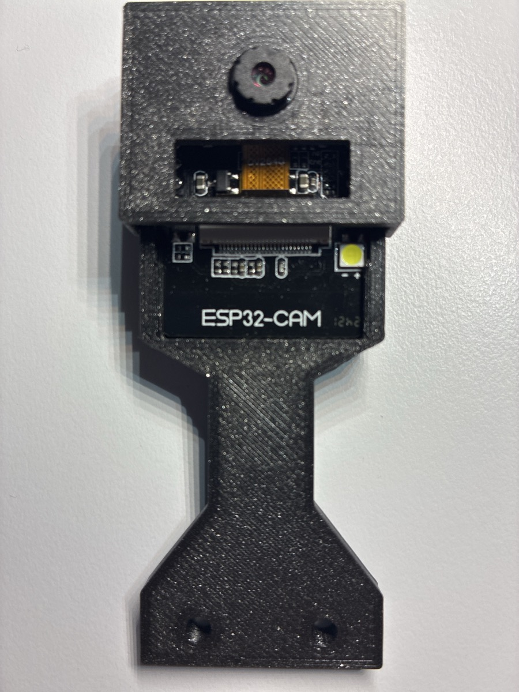
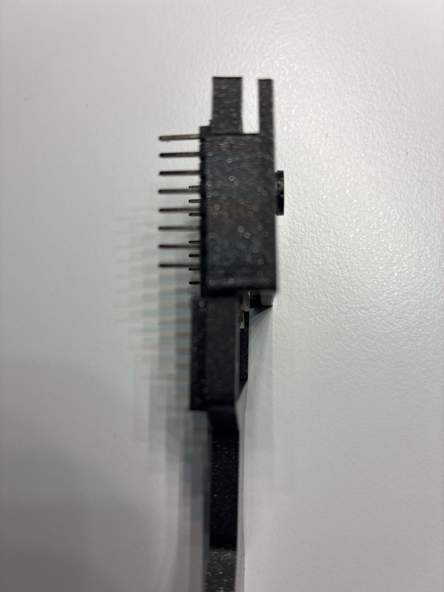
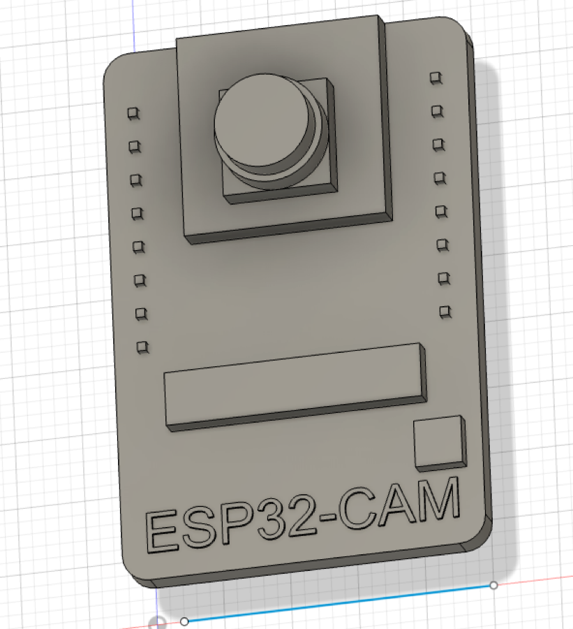

Adapter V3
- 13,5 mm schmaler Hals zwischen den Ultraschallzylindern
- 31 mm breite Aufnahme für das CAM-Modul
- 42 mm hohe Seitenführungen mit Rastnasen
- verstärkte Übergänge zwischen Hals und Aufnahme
Parametrischer, gedruckter und praktisch geprüfter Kameraadapter für den Makeblock mBot
Der Adapter nimmt ein ESP32-CAM-Modul oberhalb des Ultraschallsensors auf. Beide gedruckten Teile sitzen fest, das Objektiv bleibt frei und die Elektronik unterhalb der weißen Kamerasteckerleiste ist weiterhin sichtbar und zugänglich.



Der Dummy bildet die für die Konstruktion wichtigen Außenmaße und Kollisionsbereiche ab:
| Verfahren | FDM |
|---|---|
| Material | PETG |
| Düse | 0,4 mm |
| Schichthöhe | 0,2 mm |
| Montagebohrungen | Ø 3,4 mm, Abstand 16 mm |
Erzeugt wahlweise den ESP32-CAM-Dummy oder den mBot-Adapter mit Frontblende.
Enthält Modulmaße, Passungen, Adapterabmessungen und Druckparameter.
Ausführliche Maße, Entscheidungen und Änderungen vom ersten Entwurf bis V3.
Druckfertige STL-, 3MF- und neutrale STEP-Dateien werden nach dem abschließenden Export aus Autodesk Fusion ergänzt.
Der feste ESP32-CAM-Adapter ist ein erster Baustein für eine spätere schwenkbare Sensorbaugruppe. Ein Servo soll Kamera und weitere richtungsabhängige Sensoren gemeinsam ausrichten können.
Neben der Kamera sind Ultraschall-, ToF-, IR- und weitere Richtungssensoren denkbar.
Kameraaufnahme, Sensorträger und Servoanschluss sollen als wiederverwendbare CAD-Bausteine entstehen.
Fahrzeugspezifische Adapter sollen dieselbe Sensoreinheit am mBot und an weiteren Roboterfahrzeugen nutzbar machen.
Idee, Anforderungen, Maßaufnahme, konstruktive Entscheidungen, Probedrucke, Montage und praktische Erprobung. Verantwortlicher Autor und Herausgeber der Projektseite.
KI-gestützte Entwicklungsunterstützung bei der parametrischen Fusion-Konstruktion, dem Python-Generator und der Aufbereitung der Projektdokumentation.
Die technische Verantwortung, Freigabe und Veröffentlichung des Projekts liegen bei Andreas Sigismund.